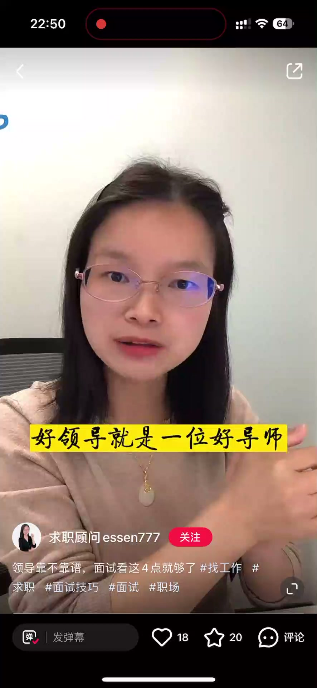
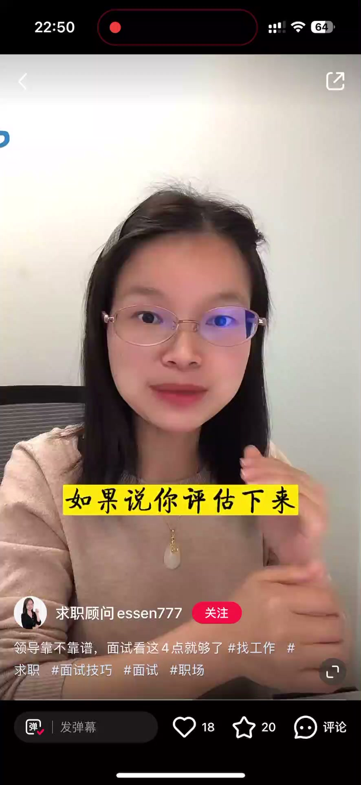

内容要点
一段 1 分钟的面试识人课：工作越干越没劲、看不到成长，很可能是因为跟错了领导——好领导是导师，既会磨砺你也会提拔你。面试时怎么评估未来上级靠不靠谱？看四点就够了：尊重（面试体验与态度）、专业（观点与解答是否专业）、开放（是否接纳合理建议）、激情（讲业务讲团队时是否眼睛放光）。
知识结构
工作越干越没劲、越干越看不到成长，可能因为跟错了领导。好领导就是好导师，会身体力行教你、引导你，既磨砺你又恰当提拔你。
尊重：好领导面试时给你良好体验，热情解答问题，趾高气扬的面试官未来不会是好领导。专业：谈到专业细节、业务细节或深度探讨时，评估面试官观点是否专业；专业水平还不如你的话，加入后成长非常有限。
开放：提出建议或问题时，好的领导会开放心态接纳合理意见；一味否定甚至打击你的面试官，加入后被 PUA 概率很高。激情：谈到自己的业务或团队时是否热情、眼睛放光，这样的领导才值得跟随。
面试是双向的：评估未来领导看四点——尊重、专业、开放、激情。四点齐全的领导值得跟随，缺失越多越要谨慎。
00:00-00:12好领导是导师
开场点题：工作越干越没劲、越干越看不到自己的成长，因为你跟错了领导。好领导就是一位好导师，他会身体力行地去教你去引导你，业务能力、待人接物的道理，既会去磨砺你，但是在恰当的时候也会去提拔你，让你的职业生涯充满生机跟希望。
引出问题：面试的时候怎么去评估未来上级靠不靠谱？看这四点就够了——尊重、专业、开放、激情。

00:13-00:44尊重与专业
先看尊重：通常好的领导在你面试的过程中会给到你一个相对良好的面试体验，会热情地解答你的问题；对于那些趾高气扬的面试官，未来应该也不会是什么好领导。
再看专业：在面试过程中，当你问到专业细节或业务细节的时候，或者双方就某一个专业话题进行深度探讨的时候，你也要评估一下面试官的观点、他的解答是不是具备专业性。如果说你评估下来面试官的专业水平还不如你，那你想一下，未来加入之后你的个人成长其实非常有限。

00:45-01:07开放与激情
第三看开放：在面试过程中，当你提出来一些建议或者问题的时候，好的领导通常会是开放的心态去看待这个问题，如果比较合理，他是很愿意去接纳的。如果说你碰到面试官一味地否定你，甚至是在打击你，那你为了加入这个团队被 PUA 的概率是非常高的。
第四看激情：当面试官在面试过程中谈到他的业务或者他的团队的时候，你要看一下是不是呈现出一种很热情很激情的状态。通常情况下好的领导在讲到他的业务、讲到他的团队的时候眼睛是放光的，这样的领导就值得跟随。
完整转录（53段）
以下文本由 Whisper medium 模型自动转录，可能存在少量识别误差，已尽可能修正。
工作越干越没劲
越干越看不到自己的成长
因为你跟错了领导
好领导就是一位好导师
他会身体定型的去教你
去引导你业务能力
带人接物的道理
既会去磨砺你
但是在恰当的时候也会去提拔你
让你的职业生涯充满生机跟希望
面试的时候怎么去评估
未来上级靠不靠谱呢
看这四点就够了
尊重 专业 开放 激情
我们先看尊重
通常好的领导在你面试的过程中
会给到你一个相对良好的一个面试体验
会热情的去解答你的问题
对于有些指高气扬的面试官
未来应该也不会是什么好领导
第二 专业
在面试过程中
当你问到专业细节或业务细节的时候
或者双方就某一个专业话题
进行深度探讨的时候
你也要去评估一下
面试官他的观点或者他的解答
是不是具备专业性
如果说你评估下来
面试官的专业水平还不如你
那你想一下未来加入之后
你的个人成长其实非常有限
第三 开放
在面试过程中
当你提出来一些建议或者问题的时候
通常会是一个开放的心态去看待这个问题
如果说是比较合理的那种状态
那他是很愿意去接纳的
如果说你碰到面试官
他是在一味地否定你
甚至是在打击你
那你为了加入这个团队
被PUA的概率是非常高的
第四 激情
当面试官在面试过程中
谈到他的业务或者他的团队的时候
你要看一下是不是呈现出一种
很热情很激情的那种状态
通常情况下
好的领导在讲到他的业务
讲到他的团队的时候
眼睛是放光的
那这样子领导就值得跟随